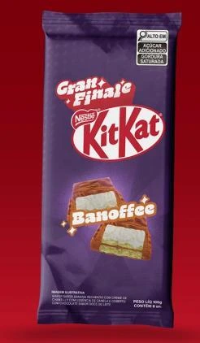
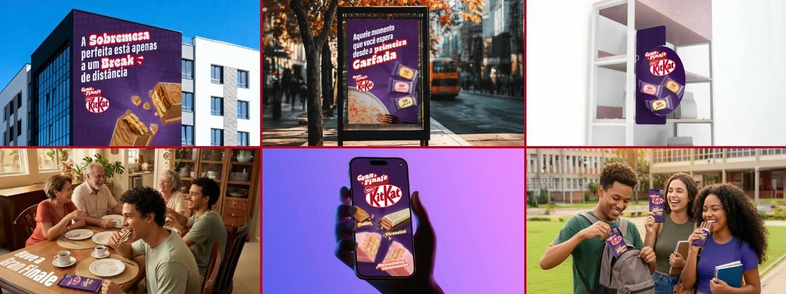

KitKat
Como parte de um projeto de fins educativos em parceria com a Nestlé, fomos desafiados a experimentar com a linha KitKat Moments, tendo liberdade para repensar seu nome, identidade e embalagens.
O briefing propunha a criação de um sistema completo de produtos, composto por um stand-up pouch, três sabores de fingers e um tablete, todos conectados por uma nova identidade visual.
A partir disso, decidimos olhar para o conceito mais conhecido da marca: o break. Em vez de apenas reproduzir a ideia tradicional de pausa, buscamos dar um novo significado a esse momento — transformando-o em uma experiência mais contemporânea, divertida e própria da linha.
Essa mudança deu origem a um novo nome e a uma nova personalidade para a marca, construídos para dialogar com seu público de maneira mais espontânea e relevante. Ao mesmo tempo, preservamos elementos essenciais que fazem KitKat ser reconhecida, criando um equilíbrio entre familiaridade e novidade.
O resultado é uma releitura da marca que transforma o ato de fazer uma pausa em algo mais expressivo, convidativo e visualmente marcante — um novo jeito de entender o famoso break.


